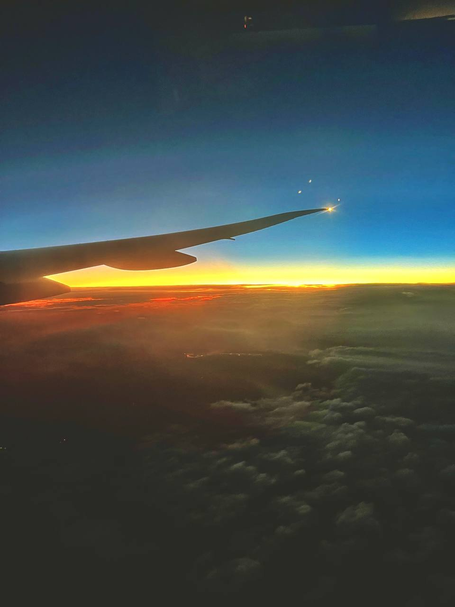

Future
Contemplating one's future invites a voyage into the realm of possibility, where the unknown beckons with both anticipation and trepidation. Like a blank canvas awaiting the strokes of an artist's brush, the future unfolds as a landscape ripe with potential, shaped by the choices and actions of the present.
As individuals peer into the horizon of tomorrow, they confront a tapestry of aspirations and uncertainties that color the canvas of their destiny. Each decision made, each path chosen, adds a new layer to the evolving narrative of one's life. Yet, amidst the myriad possibilities that lie ahead, the future remains an enigma, its contours defined by a delicate interplay of ambition and circumstance.
Within the vast expanse of the future, the journey unfolds as a symphony of agency and serendipity, with individuals navigating the currents of opportunity amidst the tides of change. While external forces may exert their influence, it is the power of individual determination and resilience that shapes the trajectory of one's path. From the pursuit of personal goals to the embrace of unforeseen challenges, the future emerges as a canvas upon which individuals can paint their dreams with the strokes of their aspirations.
As one contemplates the horizons of future possibilities, there arises an opportunity to envision a tomorrow imbued with purpose and intention. Each choice made in the present lays the groundwork for the landscape of tomorrow, shaping the contours of individual destiny. By embracing the journey with courage and conviction, individuals can navigate the uncharted waters of the future with clarity and resolve. For it is in the act of charting a course forward that the true essence of personal agency and fulfillment unfolds.
In the grand tapestry of life, the future serves as a canvas upon which individuals can craft the masterpiece of their destiny. By embracing the uncertainties and opportunities that lie ahead, individuals can embark on a journey of self-discovery and growth, navigating the ever-changing landscape with grace and resilience. Ultimately, by envisioning a future imbued with purpose and intention, individuals can shape the contours of their destiny and embark on a voyage of endless possibilities, guided by the compass of their aspirations and dreams.
Generated by ChatGPT.
